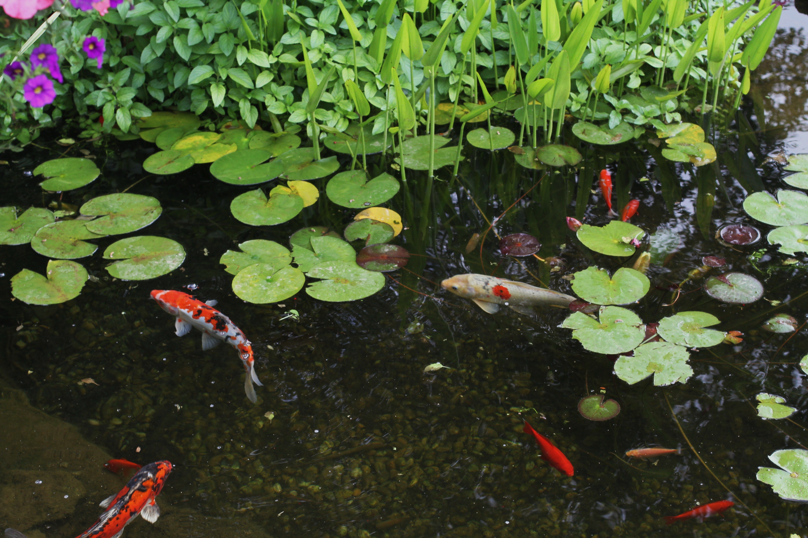

Experiment 2 - Living Impressions: Pocket Pond
Description
A random pond generator, complete with animated fish
that swim around. It was based on this image.

Color
The pebble, lily pad, leaf, and fish colors were
grabbed from the inspiring image.
Primitives
The pebbles were rendered with circle(), the lily
pads with arc(). The fish eyes and one set of fins are
rendered with ellipse(). Their dorsal and tail fins are
rendered with triangle().
Polygons
The fish's bodies, one set of their fins, and the
leaves surrounding the pond are built with bezier
curves.
Composition
Random seed values influence the number, position,
and rotation of leaves and lilypads, as well as the
position and sizes of the pebbles on the bottom. The
number, sizes, colors, and positions of the fish are
also randomized.
Life
The leaves sway with the wind using noise(), the
fish swim around following a modified version of the
boids algorithm and their tails and dorsal fins move
according to their speed. Additionally, the lily pads
float up and down, leaving subtle ripples on the water.
Technical
The pond is created bottom-up with a mix of immediate and retained graphics. The pebbles, for example, are drawn to a graphics layer only when a new pond is generated, then an image of them is drawn every frame. The animated elements all make use of p5.js's default immediate graphics. Each time the generate button is clicked, the random seed is incremented, resulting in a new pond. The fish algorithm is a modified version of this p5.js boids example.
Reflection
I followed a particularly iterative process with this experiment, gradually building upon elements and adding complexity and visual depth as I went. This made adding every feature seem easier and more approachable, as I could break it down into smaller steps, but also made it easier to give in to scope creep. I initially came into this with the idea to have a static environment, but with swimming fish as the element of life. That turned into adding animation to their tails, then animation to every environment element, and then adding shadows, and so on. I am very happy with the outcome, but I wish I could have finished by the deadline.